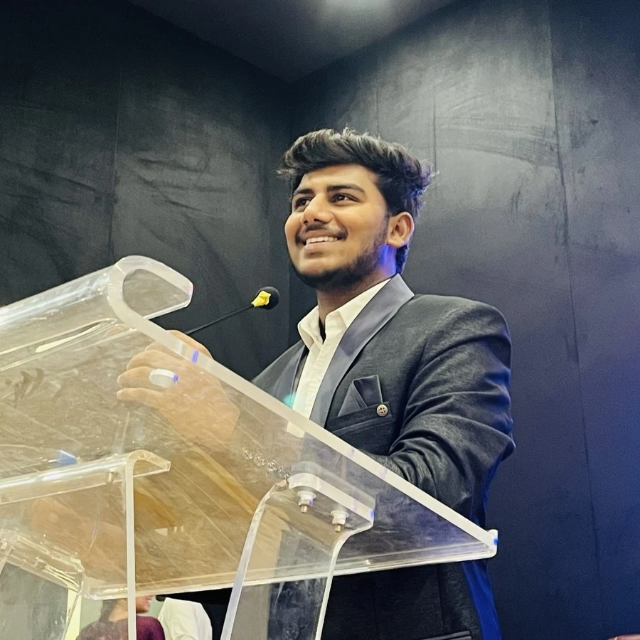
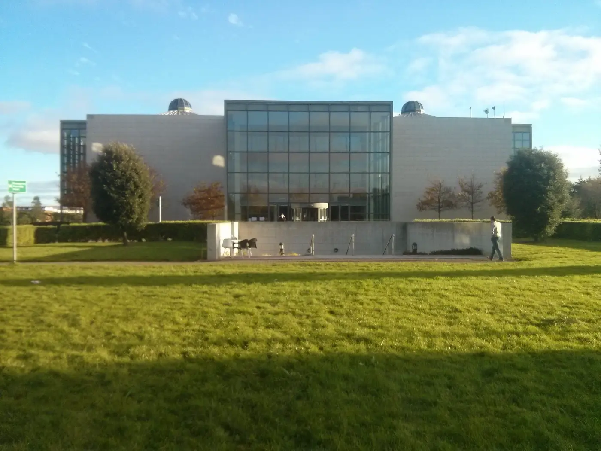

Data & databases
SQL · PL/SQL · Python · Data validation · Reconciliation
See the RFM calculations in Customer Lens and SQL controls in Report Relay.SHAIK ARHAM SAQUIB / DUBLIN, IRELAND
Business Intelligence · Data Analytics · Application Support
I investigate reporting problems, connect enterprise systems and make analysis explainable. Built on experience at Hitachi and MSc research at Dublin City University.

Drag to orbit · Use arrow keys when focused · Choose a landmark to change perspective.
An original, stylised city model. The campus and landmark positions are composed for storytelling.
EPISODE 01 / THE PROFILE
01HYDERABAD → DUBLIN / ORIGIN & DIRECTION
My work sits where enterprise systems, reporting and practical problem-solving meet. At Hitachi Digital Services, I investigated data issues, supported Oracle-based environments and worked with teams on reliable reporting and controlled system changes.
At Dublin City University, I extended that foundation into machine learning and explainable AI. Now I’m looking for Data Analyst, BI, Reporting Analyst and Application Support opportunities in Dublin and across Ireland.
EPISODE 02 / EXPERIENCE

03 / DUBLIN CITY UNIVERSITYEPISODE 03 / DUBLIN CITY UNIVERSITY
At Dublin City University, my MSc connected data analytics with machine learning and explainable AI. My co-authored practicum explored residential energy-load scheduling using XGBoost, SHAP and an LLM scheduling module.
DCU library photograph: SSCOhA / Wikimedia Commons · CC BY-SA 4.0. Resized and converted to WebP; displayed with a crop.
SELECTED WORK / INDEPENDENT DEMOS & RESEARCH
Select a volume to explore the problem, method and evidence. Every result has a source and a stated limit.
Independent demonstrations use fictional data. Customer Lens, Workforce Atlas and Report Relay were built in October 2026. Demo figures are sample outputs, not client results. DCU research is co-authored.
EPISODE 05 / THE TOOLKIT
SQL · PL/SQL · Python · Data validation · Reconciliation
See the RFM calculations in Customer Lens and SQL controls in Report Relay.Oracle ERP · OBIA / OBIEE · ODI · Power BI · ETL monitoring
Enterprise reporting and application-support experience at Hitachi. The portfolio dashboards use HTML and JavaScript.Explore my experience ↗XGBoost · SHAP · Forecast evaluation · Explainable AI
Co-authored DCU research on explainable residential energy scheduling.EPISODE 06 / RECOGNITION
HITACHI / Q4 FY24
Recognition for contributions to BI and data-analytics transitions, collaboration and delivery.
Dublin City University · Sep 2025–Aug 2026
CMR Institute of Technology, Hyderabad · 2019–2023
CONTINUED LEARNING
Cloud training · Reporting and analytics
2023 AI Foundations
Customer service and support operations
AVAILABLE FOR OPPORTUNITIES / DUBLIN & IRELAND
Open to data, business intelligence, reporting and application-support opportunities in Dublin and Ireland.
sarhamsaquib@gmail.com